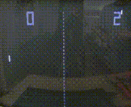

First Home Setup

Pong
Allan Alcorn
 Atari Console
Atari Console
 Modern Remake
Modern Remake
Pong is a table tennis–themed arcade video game, featuring simple two-dimensional graphics, manufactured by Atari and originally released in 1972. It was one of the earliest arcade video games; it was created by Allan Alcorn as a training exercise assigned to him by Atari co-founder Nolan Bushnell, but Bushnell and Atari co-founder Ted Dabney were surprised by the quality of Alcorn's work and decided to manufacture the game. Bushnell based the game's concept on an electronic ping-pong game included in the Magnavox Odyssey, the first home video game console. In response, Magnavox later sued Atari for patent infringement.
Pong was the first commercially successful video game, and it helped to establish the video game industry along with the Magnavox Odyssey. Soon after its release, several companies began producing games that closely mimicked its gameplay. Eventually, Atari's competitors released new types of video games that deviated from Pong's original format to varying degrees, and this, in turn, led Atari to encourage its staff to move beyond Pong and produce more innovative games themselves.
Atari released several sequels to Pong that built upon the original's gameplay by adding new features. During the 1975 Christmas season, Atari released a home version of Pong exclusively through Sears retail stores. The home version was also a commercial success and led to numerous clones. The game was remade on numerous home and portable platforms following its release. Pong is part of the permanent collection of the Smithsonian Institution in Washington, D.C., due to its cultural impact.
Pong was the first game developed by Atari. After producing Computer Space, Bushnell decided to form a company to produce more games by licensing ideas to other companies. The first contract was with Bally Manufacturing Corporation for a driving game. Soon after the founding, Bushnell hired Allan Alcorn because of his experience with electrical engineering and computer science; Bushnell and Dabney also had previously worked with him at Ampex. Prior to working at Atari, Alcorn had no experience with video games. To acclimate Alcorn to creating games, Bushnell gave him a project secretly meant to be a warm-up exercise. Bushnell told Alcorn that he had a contract with General Electric for a product, and asked Alcorn to create a simple game with one moving spot, two paddles, and digits for score keeping. In 2011, Bushnell stated that the game was inspired by previous versions of electronic tennis he had played before; Bushnell played a version on a PDP-1 computer in 1964 while attending college. However, Alcorn has claimed it was in direct response to Bushnell's viewing of the Magnavox Odyssey's Tennis game. In May 1972, Bushnell had visited the Magnavox Profit Caravan in Burlingame, California where he played the Magnavox Odyssey demonstration, specifically the table tennis game. Though he thought the game lacked quality, seeing it prompted Bushnell to assign the project to Alcorn.
Alcorn first examined Bushnell's schematics for Computer Space, but found them to be illegible. He went on to create his own designs based on his knowledge of transistor–transistor logic and Bushnell's game. Feeling the basic game was too boring, Alcorn added features to give the game more appeal. He divided the paddle into eight segments to change the ball's angle of return. For example, the center segments return the ball a 90° angle in relation to the paddle, while the outer segments return the ball at smaller angles. He also made the ball accelerate the longer it remained in play; missing the ball reset the speed. Another feature was that the in-game paddles were unable to reach the top of the screen. This was caused by a simple circuit that had an inherent defect. Instead of dedicating time to fixing the defect, Alcorn decided it gave the game more difficulty and helped limit the time the game could be played; he imagined two skilled players being able to play forever otherwise.
Three months into development, Bushnell told Alcorn he wanted the game to feature realistic sound effects and a roaring crowd. Dabney wanted the game to "boo" and "hiss" when a player lost a round. Alcorn had limited space available for the necessary electronics and was unaware of how to create such sounds with digital circuits. After inspecting the sync generator, he discovered that it could generate different tones and used those for the game's sound effects.To construct the prototype, Alcorn purchased a $75 Hitachi black-and-white television set from a local store, placed it into a 4-foot (1.2 m) wooden cabinet, and soldered the wires into boards to create the necessary circuitry. The prototype impressed Bushnell and Dabney so much that they felt it could be a profitable product and decided to test its marketability.
In August 1972, Bushnell and Alcorn installed the Pong prototype at a local bar, Andy Capp's Tavern.They selected the bar because of their good working relation with the bar's owner and manager, Bill Gaddis; Atari supplied pinball machines to Gaddis. Bushnell and Alcorn placed the prototype on one of the tables near the other entertainment machines: a jukebox, pinball machines, and Computer Space. The game was well received the first night and its popularity continued to grow over the next one and a half weeks. Bushnell then went on a business trip to Chicago to demonstrate Pong to executives at Bally and Midway Manufacturing; he intended to use Pong to fulfill his contract with Bally, rather than the driving game. A few days later, the prototype began exhibiting technical issues and Gaddis contacted Alcorn to fix it. Upon inspecting the machine, Alcorn discovered that the problem was that the coin mechanism was overflowing with quarters.
After hearing about the game's success, Bushnell decided there would be more profit for Atari to manufacture the game rather than license it, but the interest of Bally and Midway had already been piqued.Bushnell decided to inform each of the two groups that the other was uninterested—Bushnell told the Bally executives that the Midway executives did not want it and vice versa—to preserve the relationships for future dealings. Upon hearing Bushnell's comment, the two groups declined his offer. Bushnell had difficulty finding financial backing for Pong; banks viewed it as a variant of pinball, which at the time the general public associated with the Mafia. Atari eventually obtained a line of credit from Wells Fargo that it used to expand its facilities to house an assembly line. The company announced Pong on 29 November 1972. Management sought assembly workers at the local unemployment office, but was unable to keep up with demand. The first arcade cabinets produced were assembled very slowly, about ten machines a day, many of which failed quality testing. Atari eventually streamlined the process and began producing the game in greater quantities. By 1973, they began shipping Pong to other countries with the aid of foreign partners.
- Written with a little help from Wikipedia
Atari Console
Modern Remake